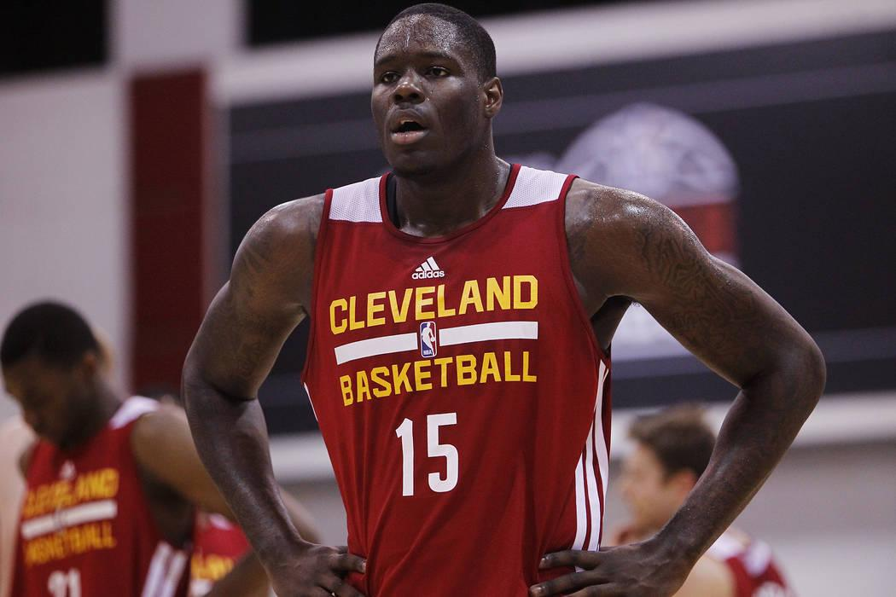
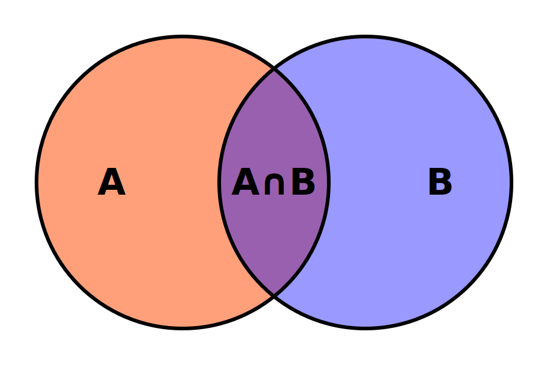
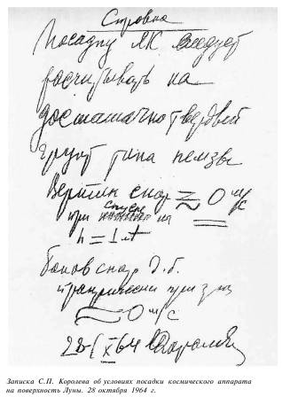

Про собеседования
Алексей Золотых
Во всем мне хочется дойти
До самой сути.
В работе, в поисках пути,
В сердечной смуте.

|
Алексей Золотых
|
А так ли я хорош в собеседованиях?
Какое собеседование считать удачным?
- Взяли подходящего
- Отказали неподходящему
— Подходящий, это тот кто прошел все испытания!
— У кого есть требуемая квалификация!
— Тот кто пройдет испытательный срок!
— Тот кто принесет выгоду!
Невозможно измерить
На практике
— Тот кто отработает 8+ месяцев и при этом будет проходить перформанс ревью с результатом 4 и выше из 5!
Дорого и почти невозможно
Про найм там где все ходы записаны...
Энтони Беннетт
1 пик NBA, 4.1 очка за игру
Айзéя Джамáр То́мас
60 пик NBA, 17.8 очков за игру
1
Какое собеседование считать удачным?
Какое собеседование считать удачным?
Какой процесс считать подходящим?
2
А что делать мне?
- Следовать процессу
- Придумать что-то свое
Про построение интервью
- Отказать дешевле, чем нанять не того
- Нельзя отказывать всегда
Метод потыкать палочкой
💩
Метод не новый...
Про необходимые и достаточные условия
- Анализируем требования
- Расставляем красные флаги
- Разговариваем
- Раскручиваем на подробности
Метод основан на статистике
90% отваливаются на очень простых случаях
Что делать, если неоткуда брать требования?
Про Королева и твердую луну
- Прочитать и оценить качество проведения интервью
- Насколько вы согласны с выводами интевьювера?
Часть 1
Встречают по одежке
Привет меня зовут Алексей. С нами еще должен быть тимлид и HR. HR сегодня заболел, а у тимлида есть более срочные дела. Так что сегодня интервью буду вести я. Ставлю на запись. Поехали.
Привет меня зовут Алексей. С нами еще должен быть тимлид и HR. HR сегодня заболел, а у тимлида есть более срочные дела. Так что сегодня интервью буду вести я. Ставлю на запись. Поехали.
Вы — лицо компании
Важно оставлять хорошее впечталение
Без лишних деталей
Спойлер или план интервью
Ты или вы
Кого мы ищем?
Можно ли включить запись?
Часть 2
Работа с требованиями
Синьор девелопер на замену предыдущему, который внезапно поменял работу из-за отъезда заграницу.
Синьор девелопер на замену предыдущему, который внезапно поменял работу из-за отъезда заграницу.
взаимодействовать с дизайнерами, и разработчиками на бэкенде
взаимодействовать с дизайнерами, и разработчиками на бэкенде
Факты
- Синьор
- Взаимодействие
- Быстрый онбординг
Синьорность
Синьорность определяется масштабом
Вопрос
Расскажи про самую сложную задачу, которую ты решил в рамках прошлого опыта
Дополнительные вопросы
- Почему выбрали именно такой подход?
- Какие еще способы рассматривали?
- Какую проблему решали?
- Как бы решил сейчас?
- Смотрим на масштаб
- Ищем несоответсвия
- Учимся
T-Shape
Не забываем про кругозор
В одном из проектов я делал страницу с графиками на Dyryakt. Там еще использовалась библиотека B12. Нас на проекте было 2 человека. Я исполнял обязанности тимлида. Декомпозировал задачи и общался с бизнесом. Ну и конечно писал много кода. Также я внедрил тестирование и подход к архитектуре РукаЛицоДевелопмент
В одном из проектов я делал страницу с графиками на Dyryakt. Там еще использовалась библиотека B12. Нас на проекте было 2 человека. Я исполнял обязанности тимлида. Декомпозировал задачи и общался с бизнесом. Ну и конечно писал много кода. Также я внедрил тестирование и подход к архитектуре РукаЛицоДевелопмент
Что вижу я
- Вопросы к масштабу
- Подход к архитектуре
Я узнал об этом подходе из подкаста СамыйУмныйРазраб. Мне кажется он призван улучшить архитектуру проекта и снизить затраты на переиспользование кода. В подкасте говорили, что такой подход очень хорошо подходит для масштабирования системы
Я узнал об этом подходе из подкаста СамыйУмныйРазраб. Мне кажется он призван улучшить архитектуру проекта и снизить затраты на переиспользование кода. В подкасте говорили, что такой подход очень хорошо подходит для масштабирования системы
- Ссылка на авторитет
- Непонятно какую проблему решал
- T-Shape
- Хорошо/Плохо
Я не успел рассмотреть другие подходы. Но мне кажется что РукаЛицоДевелопмент полностью подходит под наш проект. Он себя очень хорошо зарекомендовал в нашем проекте: всей команде нравится.
Я не успел рассмотреть другие подходы. Но мне кажется что РукаЛицоДевелопмент полностью подходит под наш проект. Он себя очень хорошо зарекомендовал в нашем проекте: всей команде нравится.
- Почему не успел?
- Странный вывод об успешности
Часть 3
Soft skills
- Soft skills проверяет не только HR
- Soft skills проверют во время всего интервью
Он принимал решения не посоветовавшись с командой. Я и другие ребята никак не смогли ему донести очевидные мысли. Например он хотел использовать Dyropak для сборки проекта. Было очевидно, что это Dyropak это слишком медленно. Уже вся индустрия давно перешла на Bystrodyr. И таких моментов было довольно много.
Он принимал решения не посоветовавшись с командой. Я и другие ребята никак не смогли ему донести очевидные мысли. Например он хотел использовать Dyropak для сборки проекта. Было очевидно, что это Dyropak это слишком медленно. Уже вся индустрия давно перешла на Bystrodyr. И таких моментов было довольно много.
- Что ты делал, чтобы решить проблему?
- Как бы ты поступил сейчас?
- Приведи другие примеры
- Почему тилид поступил так а не иначе
Мой любимый вопрос:
«как бы тебя описали люди, с которыми ты работал?»
Часть 4
Заключение
Подготовить короткий рассказ
- Стек
- Команда
- Планы
Договориться о коротком варианте собеседования
Часть 5
Оценка
- Договориться заранее
- Несколько мнений
Любимая шкала
- Выше ожиданий
- Скорее выше ожиданий
- Соответсвует
- Скорее ниже ожиданий
- Ниже ожиданий
Часть 6
Ловушки
- Соревнование
- Личное отношение
- Soft skills — это не только на HR
- Вежливость
Выводы
- Собеседование — процесс
- Внимательно слушаем
- Действуем по ситуации
- Здравый смысл